MAP+ Hilfetexte
Themen der Hilfe
Karten und Funktionen
Werkzeuge
Module
Navigation
Um in der Karte zu navigieren, haben Sie folgende Möglichkeiten:
- Zoom in/out: Mausrad, +/- Funktionen, +/- mit der Tastatur
- Karte rotieren: Shift/Alt und mit gedrückter Maustaste ziehen. Wieder nach Norden ausrichten: Pfeil-Funktion drücken (diese Funktion ist nur sichtbar, wenn die Karte rotiert wurde)
- Verschieben: Karte mit gedrückter Maustaste ziehen oder Pfeiltasten der Tastatur
- Zoomfenster aufziehen: Shift und mit gedrückter Maustaste Fenster
aufziehen
- Lokalisierung mit GPS
- Auf Initialzoom zurück (ganzes Gebiet)
- Karte im Vollbild anzeigen
Suche
Gesucht werden kann nach:
- Adressen
- Liegenschaften
- Gemeinde
- Postleitzahl/Ort
- Points of Interest wie Hotels, Restaurants etc.
- Flurnamen, Geländenamen, Ortsnamen, Bergspitzen etc. (swissnames von swisstopo)
Tipps für eine effiziente Suche
Je mehr sie die Suche verfeinern, desto weniger Treffer werden angezeigt (besonders dort, wo es viele Treffer gibt,
wie Bahnhofstrasse).
Beispiele, Suche nach Objekten:
- Adresse, Optingenstrasse 27, Bern: "opt 27"
- Adresse, Bahnhofstrasse 13 , Stettlen: "bahn 13 st"
- Liegenschaften, 977 Bern Kirchenfeld: "977 ber"
- Liegenschaften, 222 Münsingen: "222 mün"
- Hotel Sternen Muri: "ster mur"
- Berghütte Blüemlisalp: "blü berg"
Beispiele, Suche nach Kartenthemen:
- Karte + Begriff, z.B. "Karte Velo"
- Begriff, z.B. "Relief"
Anzeige und Suche von Koordinaten
Ist der Vorhängeschloss offen werden die Koordinaten
dynamisch angezeigt (beim bewegen der Maus über die Karte)
Ist der Vorhängeschloss geschlossen werden die
Koordinaten nur beim Klicken in der Karte nachgeführt. Dies erlaubt Ihnen einen
bestimmten Punkt anzuklicken und dann die Koordinaten zu kopieren
(markieren, rechte Maustaste, Kopieren oder markieren und STRG/C).
Für die Suche geben Sie die gesuchten Koordinaten
komma-separiert ein und drücken Sie die Eingabetaste.
Höhe: angezeigt werden die Höhe ohne Bewuchs und Bebauung (swisstopo swissALTI3D), die Höhe mit Bewuchs und
Bebauung (swisstopo swissSURFACE3D) und die Differenz.
Kartenauswahl
Hintergrundkarten
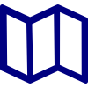
Als Hintergrundkarten stehen zur Verfügung (kann je nach Anwendung abweichend sein):
- AV grau: Amtliche Vermessung grau
- AV farbig: Amtliche Vermessung farbig
- Luftbild swisstopo swissimage
- Landeskarten swisstopo
- Landeskarten Vintage swisstopo
- swisstopo TLM by TYDAC (TLM: Topographisches Landschaftsmodell)
- OSM++ Schweiz: Angereicherte OpenStreetMap-Daten
(OSM). OpenStreetMap ist eine freie, editierbare Karte der gesamten
Welt, die von Freiwilligen erstellt wird.
Weitere Funktionen
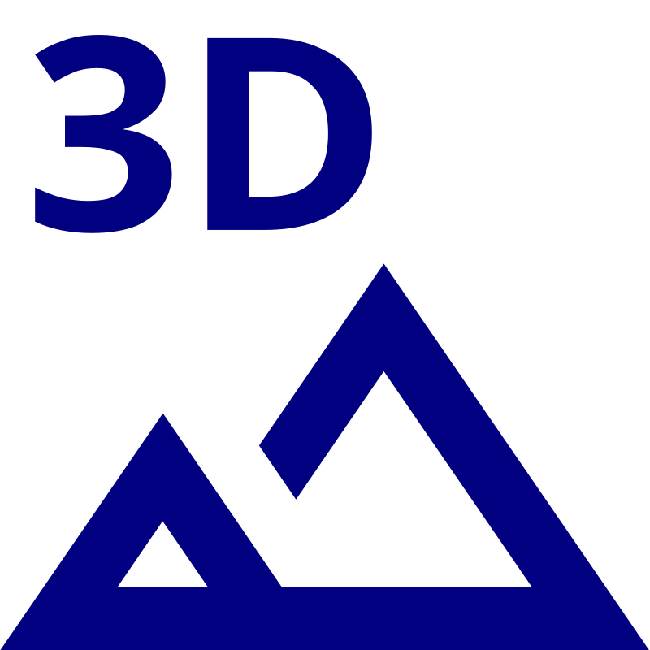
Weitere Funktionen sind:
- Themen: ausgewählte Kartenkompositionen anzeigen
- Alle angezeigten Ebenen entfernen
- Google StreetView:
- in StreetView navigieren. Die Karte wird entsprechend nachgeführt
(Position und Richtung). Beachten Sie: insbesondere bei Fotos ist die
dort angegebene Richtung nicht immer zuverlässig.
- Sie können alternativ das StreetView-Objekt in der Karte
verschieben. Auch so wird nach der nächstgelegenen Aufnahme gesucht.
- Um mehr Platz für die Karte zur Verfügung zu haben, können Sie die
Kartenwahl-Steuerung verkleinern (auf die drei Punkte links der Karte
klicken)
- 3D-Ansicht des Gebiets starten
Kartenfunktionen
Unter KARTEN sind Ebenen für folgende Themen verfügbar:
- Vermessung, Gelände
- Planung, Luftbilder
- Umwelt
- Verkehr und Energie
- Einrichtungen, Dienstleistungen
- Kultur, Tourismus, Freizeit
Informationsabfrage
Zu den meisten Objekten auf den Karten kann eine detaillierte Information abgefragt werden (auf das gewünschte
Objekt klicken).
Beispiel:
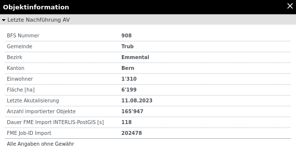
Legenden
Zu den meisten Kartenthemen sind Legenden und Beschreibungen verfügbar. Klicken Sie dazu auf den Kartennamen:
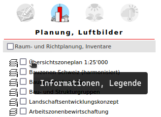
Externe Kartendienste (WMS)
Sie können sogenannte Web Mapping Services (WMS)
hinzuladen. Ein WMS ist ein Dienst, mit dem Karten über das Web zur
Verfügung gestellt werden können. Normalerweise wird ein WMS aber nicht
direkt übers Web aufgerufen, sondern in eine Anwendung oder Software
eingebaut. WMS-Dienste sind letztlich Bilder, die zudem nach Informationen
abgefragt werden können.
Beachten Sie
, dass in "nodi Schweiz" praktisch alle Kartendienste des Bundes und der Kantone verfügbar gemacht
werden, das sind so an die 15'000 Dienste!
Klicken Sie auf Externe Kartendienste (WMS). Folgender Dialog erscheint:
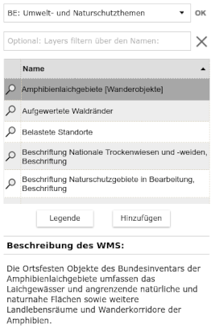
- WMS: Wählen Sie aus der Liste ein WMS aus oder tippen Sie einen Filtertext. Wahlweise können Sie auch die
gewünschte WMS-Adresse manuell eingeben, klicken in diesem Fall auf OK.
- Danach erscheint die Liste der verfügbaren Layer. Optional können Sie
diese filtern.
Sobald Sie eine Ebene ausgewählt haben, erhalten Sie folgende Optionen:
- Unten erscheint, falls vorhanden, die Beschreibung des Dienstes.
- Wenn Sie auf die Lupe neben dem Layer klicken, zoomt die Karte
auf die maximale Ausdehnung des WMS-Layers. Beachten Sie, dass
die Sichtbarkeit eines WMS-Layers auf bestimmte Zoomstufen beschränkt
sein kann -> s. Beschreibung des WMS: "Beschränkte Sichtbarkeit".
- Legende: Ist im WMS-Dienst eine Legende vorhanden, so kann
diese Funktion ausgewählt werden (sonst ist der Knopf ausgegraut).
- Hinzufügen: WMS zur Karte hinzufügen.
- Ist ein Layeer nicht transparent, wählen Sie den Karten sortieren / Transparenz und sellen diese nach
Beliben ein
- Um WMS-Layer wieder zu entfernen, klicken Sie auf die Funktion
"Alle Layer ausschalten" (ganz oben neben der Hilfe-Funktion) oder
wählen Sie den Karten sortieren / Transparenz und entfernen Sie einzelne Layer.
Karten sortieren / Transparenz
Die ausgewählten Karten können mit dieser Funktion sortiert werden (an den Pfeilsymbolen ziehen). Zu jeder Karte kann zudem die Transparenz verändert werden.
Beispiel:
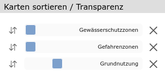
Werkzeuge
Folgende Werkzeuge stehen zur Verfügung (Details dazu s. weiter unten):
- Messen und Bemassen unter "Messen"
- Zeichenwerkzeuge unter "Zeichnen"
Drucken
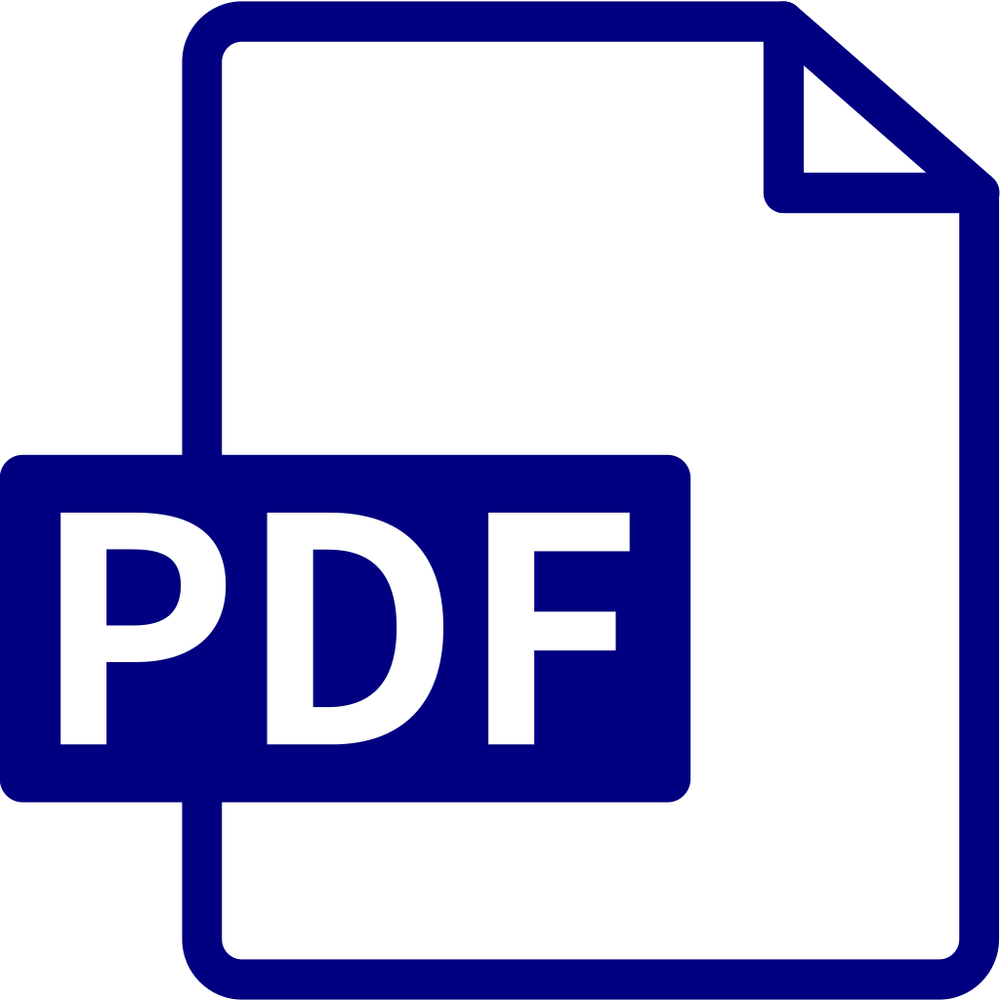
PDF Druck, massstäblich
Massstäbliches Drucken zu PDF. Untenstehende Dialogbox erscheint.
Wählen Sie einen Massstab, eine Vorlage (Layout), die gewünschte
Auflösung aund weitere Optionen aus:
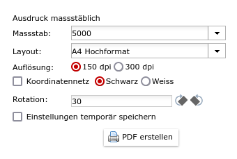
WICHTIG: Um die generierte PDF
Datei im Massstab zu drucken, schalten Sie beim Druckdialog vom
Acrobat Reader bei der Seiteneinstellung folgende Optionen aus respektive
stellen Sie diese folgendermassen ein (kann je nach Acrobat Version oder
falls Sie andere Programme benutzen abweichen):
- Seitenanpassung: keine (also weder "kleine Seiten vergrössern"
noch "grosse Seiten verkleinern")
- Automatisch drehen und zentrieren ausschalten
- Wählen Sie beim Drucker die richtige Papiergrösse und
Orientierung aus
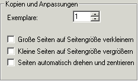
Export PDF/PNG
Der Kartenausschnitt kann als randloses PDF (nicht masstäblich) oder als PNG exportiert werden. Beim PDF kann dabei die Papiergrösse und Auflösung gewählt werden. Beim PNG die Grösse in Pixel.
Messen
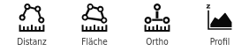
Distanz / Orthogonalmessung / Fläche
Distanz
Messen von Distanzen mittels Polylinie. Klicken Sie auf die gewünschten
Punkte. Zum Abschluss Doppeklick.
Orthogonalmessung
Exaktes orthogonales Einmessen, gehen Sie wie folgt vor:
- Ändern Sie wenn gewünschte die Eigenschaften (Strichstil, Schriftart und deren Grössen)
- Digitalisieren Sie zuerst die Abszisse (Basis), z.B. eine Parzellengrenze (zwei Grenzpunkte)
- Dann beliebig viele Ordinatenpunkte: z.B. Hauskanten, Schächte etc.
- Um abzuschliessen: Doppelklick beim letzten Ordinatepunkt
- Um aus der Funktion auszusteigen, wählen Sie die Funktion erneut oder schliessen Sie die Dialogbox
Animierte Anleitung zeigen ...

Fläche
Messen von Flächen. Klicken Sie auf die
gewünschten Punkte. Zum Abschluss Doppeklick.
Verschieben / Editieren
Erfasste Objekte (Linien, Flächen) können nachträglich editiert und / oder verschoben werden. Dazu gehen Sie wie folgt vor:
- Stellen Sie sicher, dass keine Messfunktion aktiv ist
- Klicken Sie auf da gewünschte Objekt
- Um das Objekt zu verschieben, klicken Sie auf das blaue Verschiebungsbild und ziehen Sie das Objekt. Bei geraden Linien nicht in die Mitte, sondern auf eins der Pfeile klicken die nicht auf der Linie ist
- Um dem Objekt Punkte hinzuzufügen, klicken Sie auf die Linien an der gewünschten Stellen und ziehen Sie
- Um ein Zwischenpunkte zu löschen, selektieren Sie den Punkt und drücken auf die Taste Löschen
- Um ein Objekt zu löschen, selektieren Sie es und drücken auf die Taste Löschen
Animierte Anleitung zeigen ...
Profil
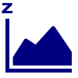
Klicken Sie auf den gewünschten Startpunkt und erfassen dann beliebig viele Zwischenpunkte. Zum Abschliessen
Doppelklick. Nach
Abschluss der Messung können Sie Punkte verschieben oder neue
Zwischenpunkte einfügen. Um einen neuen Profil generieren zu können,
wiederholen Sie einfach die Prozedur. Um aus der Funktion auszusteigen,
wählen Sie die Funktion erneut.
Bewegen Sie die Maus über das Profil, wird die Lage in der Karten angezeigt.
Sie können weiterhin Punkte der Polylinie hinzufügen und verschieben (s. oben), das Profil wird aktualisiert.
Um die Funktion zu beenden, klicken Sie erneut auf das Symbol, wählen Sie eine andere Funktion oder wechseln Sie zu Karten oder suchen.

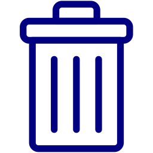
Löschen: klicken Sie auf
Löschen, um alle Bemassungslinien zu löschen. Um einzelne
Bemassungslinien zu löschen, klicken Sie auf die gewünschte Linie. Der Bemassungsdialog erscheint: Löschen = Papierkorb-Ikone.
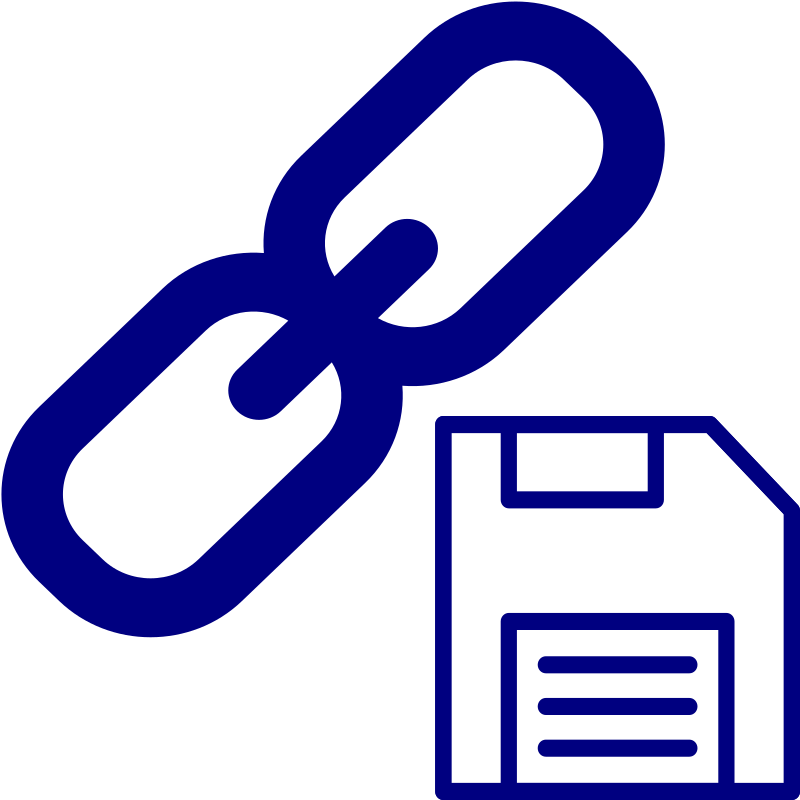
Speichern: Bemassungslinien als
Lesezeichen speichern. Das Lesezeichen können Sie dann
entweder als solches speichern (übliche Browser-Funktionalität) oder
kopieren und versenden.
Zeichnen
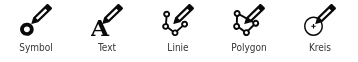
Symbole
Klicken Sie auf die Funktion, um diese zu aktivieren. Eine Auswahl an Symbole erscheint. Wählen Sie einen Symbol aus und positionieren Sie diesen auf der Karte. Beliebig wiederholen. Um das Zeichnen
abzuschliessen schliessen Sie die Symbolliste, klicken erneut auf die Funktion oder wählen Sie eine andere Funktion aus. Um ein Symbol zu verschieben, anklicken und mit gedrückter Maustaste bewegen. Sie können auch den Symbol ändern: anklicken und anderen Symbol aus der Liste wählen.
Texte
Klicken Sie auf die Funktion, um diese zu aktivieren. Wählen Sie die
gewünschte Schriftart etc. aus. Positionieren Sie den Text nach
Belieben. Beliebig wiederholen. Um das Zeichnen abzuschliessen,
schliessen Sie die Dialogbox, klicken erneut auf die Funktion oder
wählen Sie eine andere Funktion aus. Um einen Text zu verschieben,
anklicken, Dialog erscheint; erneut anklicken und mit gedrückter
Maustaste bewegen. Sie können auch den Text und die Ausprägung ändern.
Linien
Klicken Sie auf die Funktion, um diese zu aktivieren. Wählen Sie die
gewünschte Linienart etc. aus. Zeichnen Sie die Linie indem Sie beliebig viele Stützpunkte zeichnen. Abschluss mit Doppelklick. Um das Zeichnen abzuschliessen, schliessen Sie die Dialogbox, klicken erneut auf die Funktion oder wählen Sie eine andere Funktion aus. Um eine Linie zu verschieben oder zu verändern, anklicken, Dialog und Stützpunkte erscheinen. Sie können die Linie als Gesamtes verschieben, einzelne Stützpunkte verschieben oder Stützpunkte hinzufügen. Und auch die Ausprägung anpassen.
Flächen / Kreise
Klicken Sie auf die Funktion, um diese zu aktivieren. Wählen Sie die
gewünschte Linienart etc. aus. Zeichnen Sie die Fläche indem Sie
beliebig viele Stützpunkte zeichnen. Abschluss mit Doppelklick. Um das
Zeichnen abzuschliessen, schliessen Sie die Dialogbox, klicken erneut
auf die Funktion oder wählen Sie eine andere Funktion aus. Um eine
Fläche zu verschieben oder zu verändern, anklicken, Dialog und
Stützpunkte erscheinen. Sie können die Fläche als Gesamtes verschieben,
einzelne Stützpunkte verschieben oder Stützpunkte hinzufügen. Und auch
die Ausprägung anpassen.
Verschieben / Editieren
Erfasste Objekte können nachträglich editiert und / oder verschoben werden. Dazu gehen Sie wie folgt vor:
- Stellen Sie sicher, dass keine Zeichenfunktion aktiv ist
- Klicken Sie auf da gewünschte Objekt
- Um das Objekt zu verschieben, klicken Sie auf das blaue Verschiebungsbild und ziehen Sie das Objekt. Bei geraden Linien nicht in die Mitte, sondern auf eins der Pfeile klicken die nicht auf der Linie ist
- Um dem Objekt Punkte hinzuzufügen, klicken Sie auf den Objekt an der gewünschten Stellen und ziehen Sie
- Um ein Zwischenpunkte zu löschen, selektieren Sie den Punkt und drücken auf die Taste Löschen
- Um ein Objekt zu löschen, selektieren Sie es und drücken auf die Taste Löschen
Löschen;
- einzelne Objekte: anklicken und auf die Taste Delete klicken
- alle: Funktion "Alles löschen" verwenden
Speichern
Zeichnungen als Lesezeichen
speichern. Das Lesezeichen können Sie dann entweder als solches speichern
(übliche Browser-Funktionalität) oder kopieren und versenden.
Mobile Version
Die mobile Smartphone-Version hat eine eingeschränkte Funktionalität, wie folgt:
Funktionsleiste:
- Zoom +/- (verwenden Sie auch die Finger zum vergrössern/verkleinern)
- GPS-Ortung
- Gesamtansicht (Home)
- Hintergrundkarten
- Themenkarten
- Alle Layer löschen
- Messen
Weitere Funktionalitäten:
- Layer hinzufügen (knopf links oben)
- Objektabfrage: Klicken Sie auf das Objekt eines Layers
- Suche nach Adressen, Parzellen, Ortsnamen usw.
- Anzeige der Koordinaten und Höhen des Mittelpunkts (Kreuz)
- Digitalisieren (falls bei bestimmten Layer aktiviert)
Alle Funktionen bis auf das Messen erklären sich mehr oder weniger von selbst. Einfach ausprobieren ...
Messen
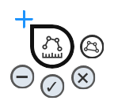
Das Messen auf mobilen Geräten (SmartPhones) bietet folgende Funktionalität:
Ändern Sie die Art der Messung zwischen von Polylinien und Flächen. Die Art der Messung wird dann im Messcursor reflektiert. Um den Messvorgang zu starten, klicken Sie auf den Cursor an der gewünschten Stelle. Bewegen Sie den Cursor und fügen Sie nach Belieben Punkte ein. Um einen Vorgang abzuschließen, klicken Sie auf den Button "OK".
Klicken Sie auf die Schaltfläche "Minus", um den letzten Punkt zu löschen.
Klicken Sie auf den Button "Papierkorb", um die letzte Messung zu löschen. Klicken Sie auf den Button "Papierkorb" im Hauptmenü, um alle Messungen zu löschen.
Klicken Sie auf die Schaltfläche "x", um die Funktion zu beenden.
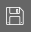
Klicken Sie auf den Button "Speichern" im Messmenü, um die Messung als URL zu speichern (die Sie dann kopieren und jemandem schicken können).